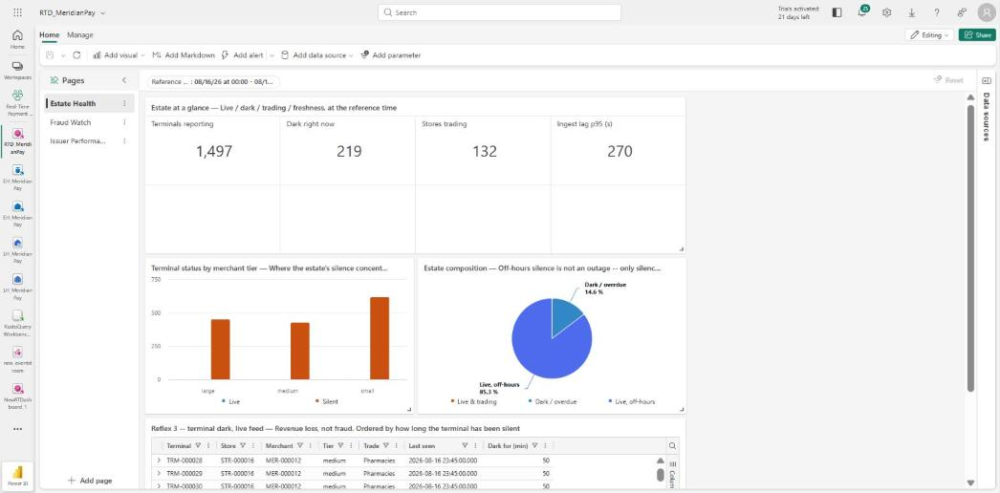
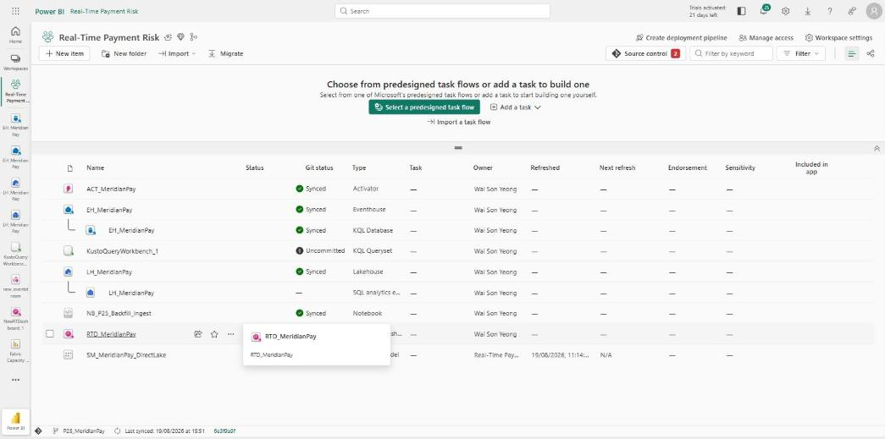
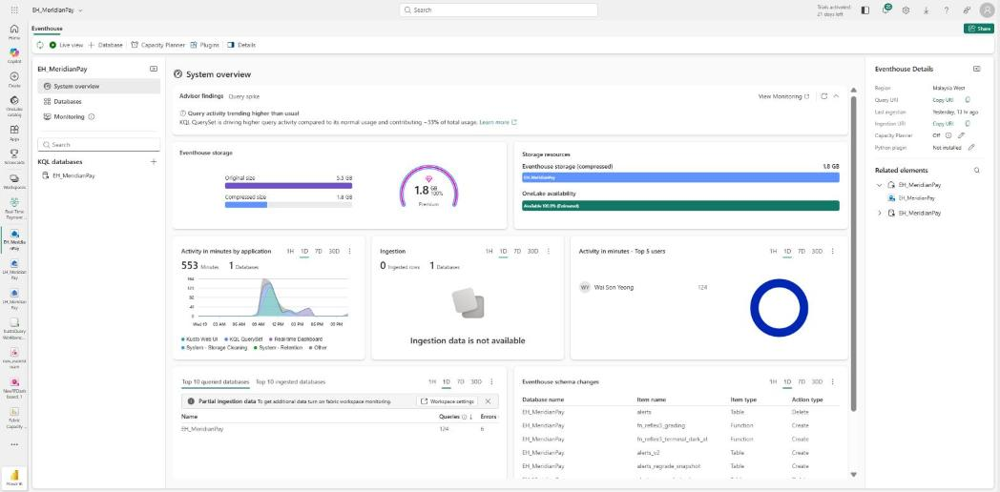
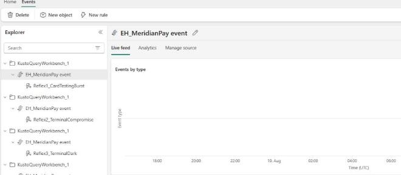
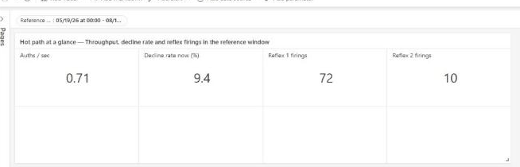
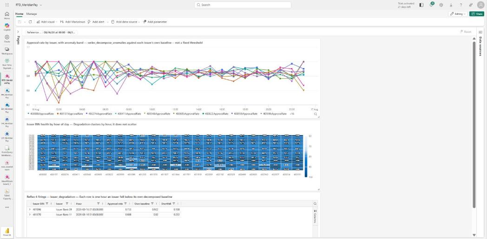
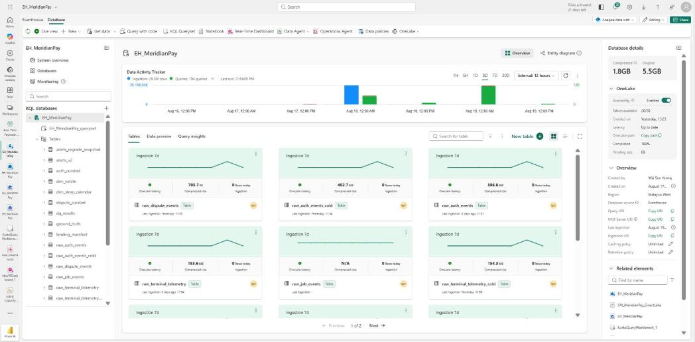
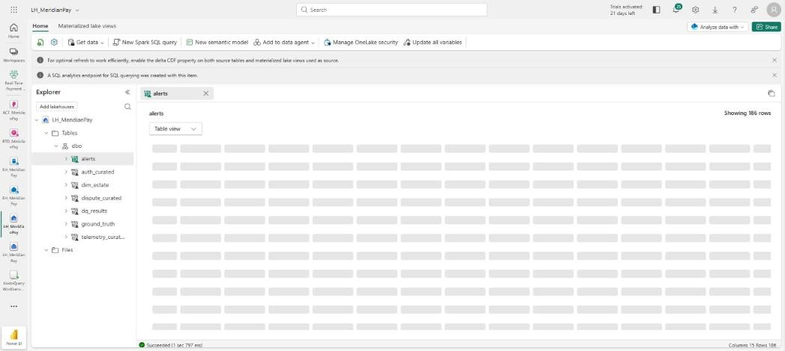

Catch the fraud while it is happening — then prove you were right
Follow along and you will build a working real-time payments risk platform: ten million events in an event database, four detection rules firing on patterns instead of schedules, a live operator dashboard — and, when the chargebacks arrive two months later, a report that grades every alert the platform raised and publishes its own precision. No prior Fabric experience assumed, and nothing to buy.

Why anyone builds this
Meridian Pay is a card acquirer: it owns the terminals in shops, not the cards in wallets. Two things go wrong constantly, and both are usually found far too late.
| The problem | How it usually gets found |
|---|---|
| Card testing | A nightly batch job, the next morning |
| A compromised terminal | A chargeback, six weeks later |
| A dead terminal | The merchant phones in to ask why they took no money today |
| An issuer quietly declining | Nobody, until the merchant churns |
The last one is the interesting case. Nothing is broken — an issuer's approval rate has drifted down two points, which is invisible against a fixed threshold and obvious against that issuer's own baseline.
What you are building
Nine Fabric items. The unusual thing about the shape is what is missing from it.
| Item | Its job |
|---|---|
| Eventhouse + KQL database | The system of record for events. Ten million rows, queried in milliseconds |
| Update policies + materialized views | The transformation layer — this replaces Bronze/Silver/Gold notebooks entirely |
| KQL Queryset + functions | The detection rules, the DQ checks, and the estate hierarchy |
| Real-Time Dashboard ×3 pages | The operator's surface |
| Activator ×4 reflexes | Fires on patterns in the stream, not on a calendar |
| Lakehouse | Cold path, and the shortcut surface the model reads |
| Direct Lake semantic model | Power BI reading the event store's own Delta files — with no Gold notebook underneath |
| Power BI report ×5 pages | The analyst's surface, including the alert-grading page |
| Git integration | Every item definition on disk as you build it |
Set up the workspace — and connect Git before you build anything
Everything lives in one Fabric workspace — a project folder in the cloud that holds databases, dashboards and reports side by side.
- Sign in at app.fabric.microsoft.com with your work or school account.
- Workspaces → New workspace. Call it something like
Real-Time Payment Risk. - Under Advanced, set the licence mode to your Trial capacity.
- Workspace settings → Git integration. Connect it to a repository and branch now.
The Git provider wants a PAT, not the OAuth flow you expect

Generate the estate and the events
A payments platform needs payments. This build generates its own — 1,500 terminals across 927 stores and 600 merchants, and about ten million events over ninety days.
Clone the repo, then:
pip install -r 01_Source/requirements.txt python -m generator.backfill --seed 250817 --out ./output
It writes Parquet feeds plus a Landing_Manifest.csv — a row per file with its row
count, so every downstream number has something to reconcile against.
The generator deliberately injects four things a clean dataset would not have:
| What it injects | Why it earns its place |
|---|---|
| Duplicate rows — 21,462 auth, appended at the end of the frame unshuffled | Gives the deduplication layer something real to remove, and — as it turns out — exposes a Kusto behaviour that would otherwise have shipped silently. See step 4 |
| Out-of-order reversals and late arrivals past the watermark | Gives the data-quality rules something to detect that is not just "a column is null" |
| Device clock skew on every terminal | Forces an explicit decision about which timestamp is authoritative |
| A schema cutover partway through the window | Real estates do not have one payload shape forever |
diff -rq them. If they differ, every number you publish later is unreproducible and you will not find out until someone asks. This project's second run produced an identical manifest checksum from a completely fresh container — which is a stronger proof than the first run's own self-check.Create the Eventhouse and land the backfill
An Eventhouse is Fabric's store for event data. Inside it is a KQL database — a column store built for "what happened in the last ten minutes" over billions of rows.
- New item → Eventhouse. Call it
EH_MeridianPay. - Create the raw and staging tables from
kql/00_raw_and_staging_tables.kql. - Load the backfill with the notebook in
notebooks/, then reconcile every table against the manifest.
Why one notebook and not three

Build the transformation layer in KQL — no notebooks
This is the step that makes the build different. Instead of notebooks reading Bronze and writing Silver, the transformation runs inside the database, as rows arrive.
| Piece | What it does |
|---|---|
| Update policy | A query that runs automatically on every ingest, writing the result into a curated table. This is your Silver layer |
| Materialized view | An always-current aggregate maintained by the engine. This is your Gold layer |
| Functions | Named queries — the detection rules and the data-quality checks live here |
summarize arg_max(...) by key only removes duplicates whose original arrived in the same batch. In this build the generator appends duplicates at the end of the frame, so at 250,000-row batches they all landed in the final batch while their originals sat across the preceding 5.36 million rows. 3,414 of 21,477 were caught. Nothing errored. Every command succeeded, the policy ran clean, and the tables filled with a 0.4% inflation nobody would have noticed.The fix is a staged global dedupe: take_any(*) into a staging table, verify by count,
swap it in, drop the staging table.
// take_any(*), NOT arg_max(key, *) -- the latter must hold all 19 columns per // group across 5.38m rows and dies with LowMemoryCondition. The injected duplicates // are byte-identical, so take_any returns the same row and is bounded in memory. .set-or-replace auth_curated_stg <| auth_curated | summarize take_any(*) by auth_id
Kusto refuses .set-or-replace when the source query reads the destination
ClientAdminCommandFromQueryBadRequestException. Wrapping the query in a function does not help — Kusto resolves the body. Stage into a second table and swap.The Queryset ends a statement at the first semicolon
let function body the first ; is inside the body, so the editor splits the statement in the wrong place. Six of nineteen functions in this build were silently never created that way — found by noticing an alphabetical gap in .show functions, not by any error. Select such blocks by hand and run the selection.Six stream data-quality rules
Each rule counts something, records the count, and states a floor it must clear. The results go into a table, because a check whose result nobody stored did not happen.
| Rule | What it proves |
|---|---|
| Idempotent dedupe | Every duplicate key was removed — and the count reconciles to the injection register |
| Out-of-order reversal resolution | A reversal arriving before its authorisation still resolves correctly |
| Late arrival past watermark | Late data is counted rather than silently dropped |
| Device clock skew | Every terminal's skew is measured, not assumed |
| Payload schema evolution | The cutover is visible and quantified |
| Hot vs cold reconciliation | The streaming path and the batch path agree |
independent_check_passed column is null, and that is recorded as a deliberate decision. Fabricating a second opinion would have been worse than an honest gap.Six rules in one query will exhaust the capacity's memory
toscalar() scans over 5.4 million rows. Split them into six independent statements.Four reflexes, and Activator
A reflex here is a KQL function that returns the rows meeting a detection rule. Activator is the Fabric item that runs one on a schedule and does something when it fires — an email, a Teams message, a webhook.
| Reflex | What it looks for |
|---|---|
| 1 · Card testing burst | A spike of small declining authorisations on one terminal |
| 2 · Terminal compromise | Tamper telemetry alongside an abnormal decline pattern |
| 3 · Terminal dark | A terminal silent for 20+ minutes while its store is trading |
| 4 · Issuer degradation | An issuer's approval rate below its own decomposed baseline |
series_decompose_anomalies at sigma 2.5, hourly, gives every issuer its own baseline and flags departures from it. And an hour with no traffic is written as a gap, not as a 0% approval rate — a zero there would be a fabricated outage.arg_max materialized view cannot time-travel. Reflex 3 originally read a "last seen per terminal" MV. That view has already collapsed to one row per key before any query sees it, so no where clause can ask what it looked like last Tuesday — which means the reflex cannot be graded against a historical backfill at all. The fix is one line: read the curated table directly and filter trusted_time <= ref_time before the max(). Worth knowing before you choose the MV, not three phases later.
The Real-Time Dashboard — generated from files, not drawn
Three pages: estate health, fraud watch, issuer performance. The dashboard is
generated from a Python spec plus one .kql file per tile, and imported as JSON.
python rtd/build_rtd_json.py --skeleton skeleton.json --out RTD_MeridianPay.json # then: open the dashboard -> Manage -> Replace with file
$schema, the schema version and the data-source id are not documented anywhere — take them from a file the service itself produced rather than guessing.Deneb does not run in a Real-Time Dashboard
anomalychart and heatmap instead.There is a minimum tile size, and a point budget
multistat. And a decomposition tile has a point budget that is easy to blow: series_decompose_anomalies returns three series, so 24 issuers × ~2,120 hourly buckets became 152,640 points against a 50,000 maximum over a 90-day window. Do not widen the step to make the error go away — that silently turns an hourly analysis into a different one. Declare the tile short-window and say which reference window is its evidence window.

Make the data readable by Power BI — and load the measures
A Direct Lake model reads the Delta files directly. No import, no refresh schedule, and — in this build — no Gold notebook underneath it.
- In the KQL database, turn on OneLake availability. The Eventhouse starts mirroring every table into Delta.
- Create a Lakehouse and add a shortcut to each table you want in the model.
- Build the semantic model on the Lakehouse, then load measures over XMLA.
.set-or-replace a table whose OneLake mirror is already live. OneLake availability mirrors ingestion; an extent-level replace is not guaranteed to propagate. This build did exactly that while grading its alerts, and the table then read 186 rows in KQL and zero everywhere downstream — for two sessions. Five hypotheses were formed and five refuted before the answer turned out to be a single availability toggle.

alerts reading 186 rows through a completely different engine from the one that wrote them. That is the read that makes the mirror verified rather than assumed.Load measures over XMLA rather than clicking them in
A Direct Lake model whose auto-update the service disables returns BLANK, not an error
Grade the alerts — the part that makes this a platform rather than a demo
Detection is the easy half. The build is only interesting because it then answers "were those alerts any good?" — against the 137 planted episodes and against the disputes that arrive 30 to 60 days later.
So every alert carries a maturity cohort, and precision is reported per cohort, never blended. The report's headline measure is blank until you slice it to a graded cohort.
// Precision (Reportable) -- deliberately BLANK unless the filter context is a
// single graded cohort. A non-blank unfiltered value is a failure, not a bonus.
Precision (Reportable) =
IF ( HASONEVALUE ( alerts[maturity_cohort] ) && SELECTEDVALUE ( alerts[is_graded] ) = TRUE (),
DIVIDE ( [True Positives], [Alerts Graded] ) )guarded_measures.json sidecar declaring which measures are the unguarded sources, and a lint rule that fails the build if any visual binds one. The two unguarded precision measures are bound by zero visuals, and a check proves it on every run rather than a reviewer remembering.Every trap, in one table
Each of these cost real time on the original build, and most are not in the documentation. Worth skimming before you start.
| What happens | What you will see | What to do |
|---|---|---|
| Fabric trial needs a work account | Sign-up simply refuses | Nothing to debug — get a work or school account |
| Git provider wants a PAT, not OAuth | The dialog stalls waiting for a token | Generate a repo-scoped PAT before you start |
| Update policies dedupe per BATCH, not globally | Curated tables silently ~0.4% too big; nothing errors | Staged global dedupe with take_any(*), verified by count |
| arg_max(key, *) over wide rows dies | LowMemoryCondition | take_any(*) — bounded in memory, same answer for identical rows |
| .set-or-replace cannot read its own destination | ClientAdminCommandFromQueryBadRequest | Stage into a second table and swap; wrapping in a function does not help |
| The Queryset splits a statement at the first ';' | Functions silently never created | Select multi-let blocks by hand; check .show functions for gaps |
| An arg_max MV cannot time-travel | A detector that cannot be graded historically | Read the curated table and filter before the max() |
| .set-or-replace on a live OneLake mirror jams it | 186 rows in KQL, 0 rows downstream, no error | Toggle OneLake availability off and on; do not rebuild the table |
| A KQL table cannot be renamed while mirroring is on | 'Tables cannot be renamed…mirroring policy enabled' | Choose names before availability goes on — create/swap/rename is unavailable after |
| A shortcut's NAME is independent of its SOURCE | Dropping the 'right' table destroys the live path | Read Shortcut Target Property, then grep every consumer for the name |
| Direct Lake auto-update disabled by the service | Every visual blank, no error anywhere | Read the setting; it can also switch back on by itself |
| A model with no relationships passes every validator | A constant numerator over a varying denominator | EVALUATE SUMMARIZECOLUMNS against the live model |
| Deneb does not run in a Real-Time Dashboard | The tile never renders | Use native anomalychart / heatmap |
| RTD minimum tile size is 9×7 | 'Current tile size is smaller than the minimum supported' | Consolidate stats into a multistat row |
| series_decompose_anomalies returns THREE series | 'Max points exceeded… returned 152,640' | Treat the tile as short-window; do NOT widen the step to hide it |
| A theme can blank a visual entirely | Card visuals paint background and border, then nothing | A wildcard-forced title eats a 96px card's height; override it for cardVisual |
| A linter pointed at the report folder checks nothing | '0 errors, 0 warnings' from a scan that never ran | Make every check print how much it read, and fail at zero |
What this build does not do
Stated plainly, so nothing here oversells itself. A reviewer would find all of these in ten minutes; it is cheaper to say them.
- The two Eventstreams were never built. They are mandatory in this project's own contract, they do not exist in the workspace, and the component count finished at 10 of 11. The backfill route is proven end to end; the live-replay route has working code and nothing to replay into. It is recorded as a degradation rather than reinterpreted as a success, because the alternative is the kind of portfolio piece that quietly redefines its own scope.
- Reflex 2's precision of 1.000 is inadmissible, and is published as inadmissible. The alert set was constructed from the episode it is graded against.
- Reflex 3's precision is 0.163, with recall 60 of 60. The false positives are long silences inside modelled trading hours, which points at the trading-calendar model rather than the threshold — a threshold sweep refuted the original explanation. That diagnosis is untested and is labelled as such.
- The data is invented. Meridian Pay is fictional. The shape is realistic; no figure represents a real company, and every injected element is declared in the repository.
- Trial capacity only. Nothing here says what this would cost to run in production, and the capacity was shared with another workspace throughout.
- One data-quality anomaly was never closed — a shortfall of 2 rows against an expected 8,233. It was raised in session three and carried, unexplained, to the end. An open question, never a pass.